Basement: existing unfinished
Drag to orbit · scroll or pinch to zoom · right-drag to pan
Model notes & downloads
The unfinished basement with owner-measured spans and heights, current utilities, laundry, exposed structure and both stair routes.
October 8 measurements establish a roughly 24′1″ × 22′1″ inside shell, 6′11½″ to joists and 6′4¼″ beneath the beam. Ten kitchen treads and six wider bulkhead treads are represented. October 9 post updates give 6½″ clear gaps beside the chimney and 63″ from front wall to the living post center. Stair rises, beam/chimney registration, equipment offsets and bulkhead endpoints remain approximate. The renovation now shares the measured shell, structural heights and stairs; finish buildup remains unresolved.
Related: Basement renovation: Option 2
Rendered views & plans

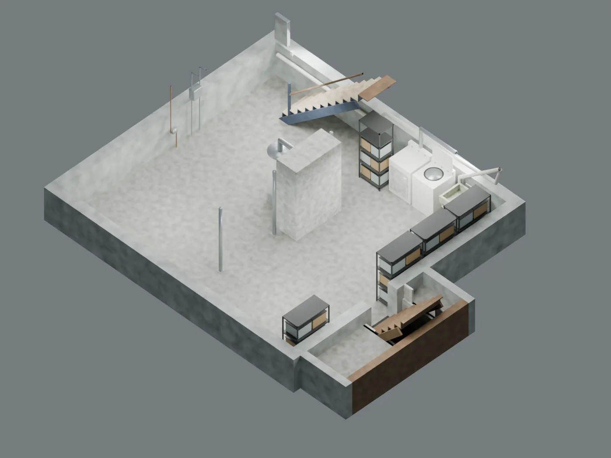

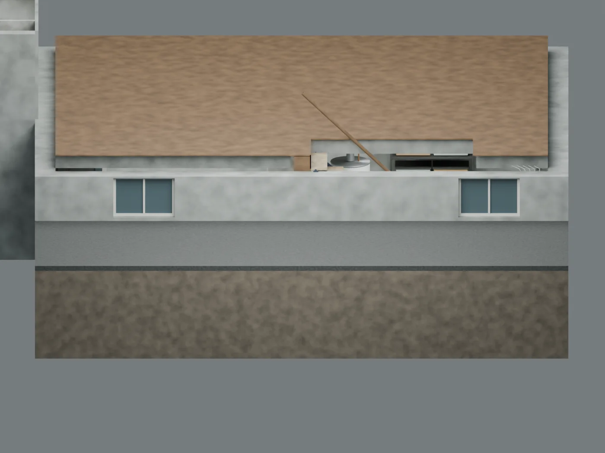

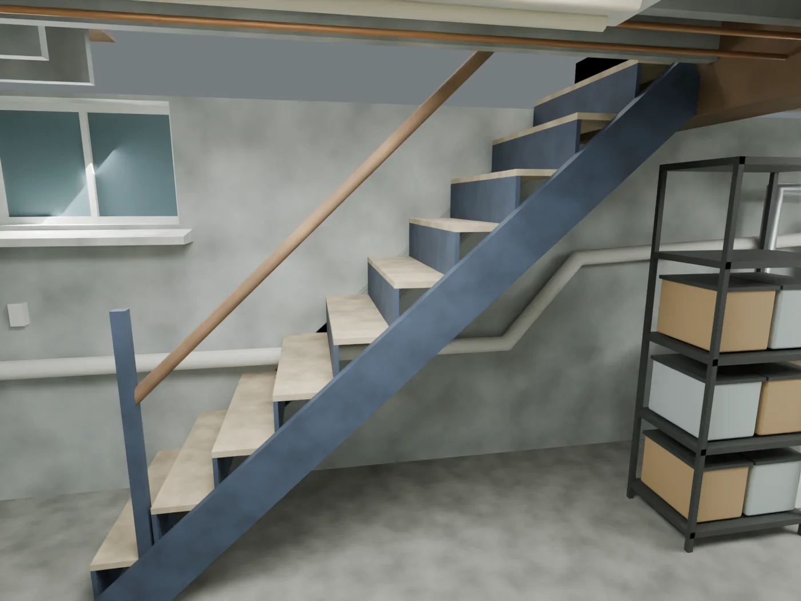

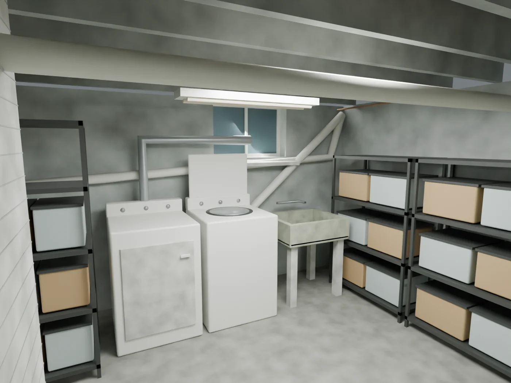

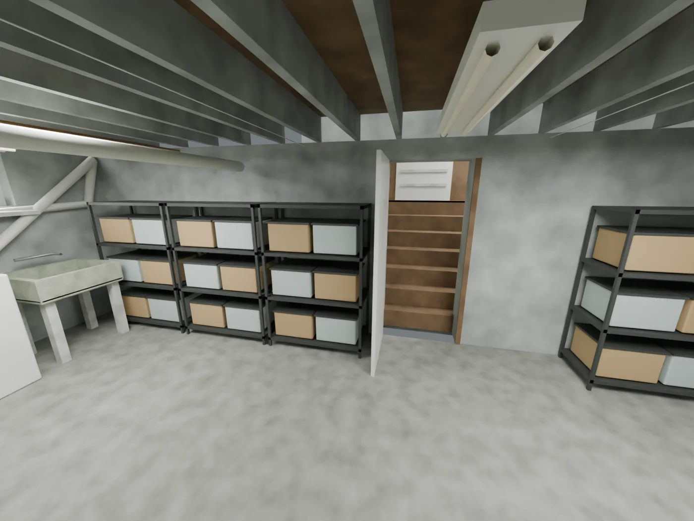

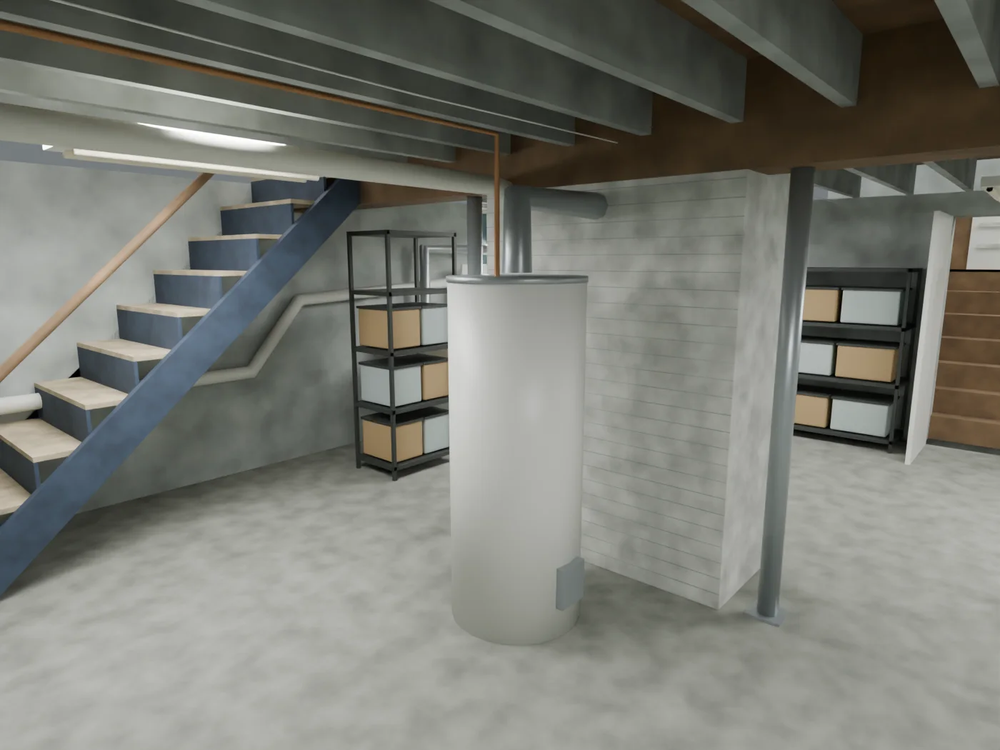

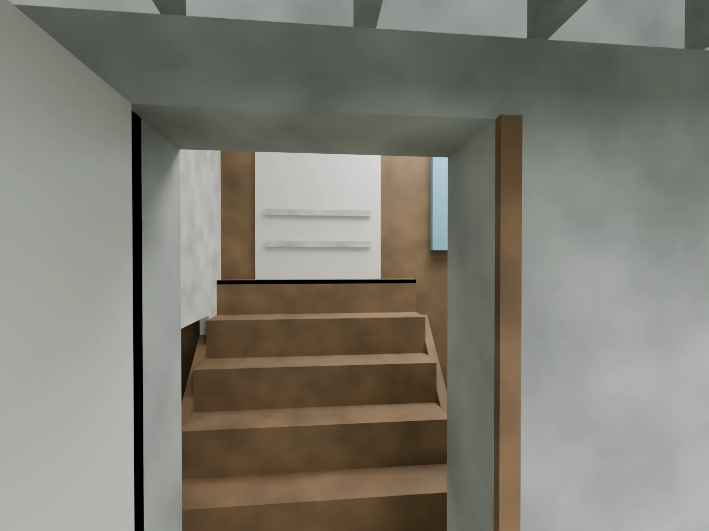

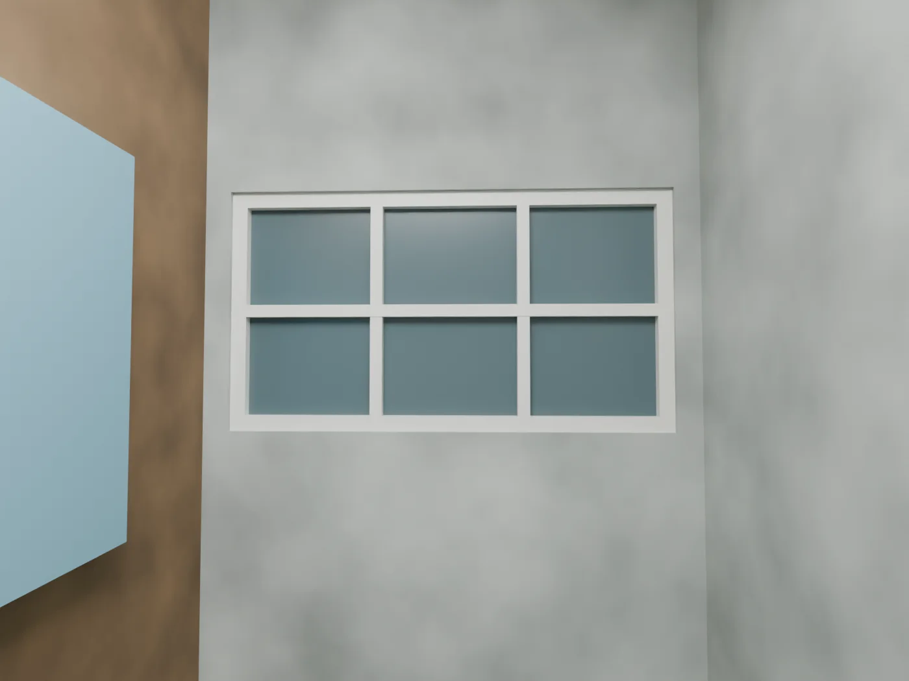

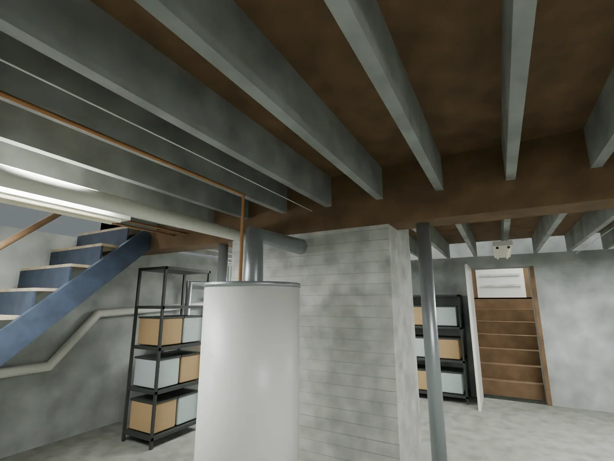
Window and driveway heights
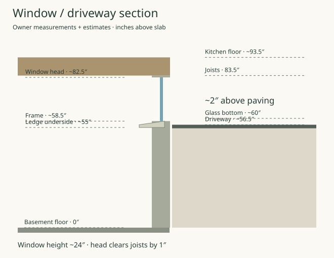
Measured existing plan
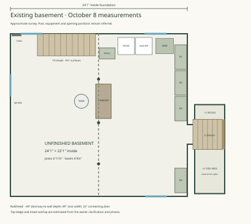
Existing and proposed overlay
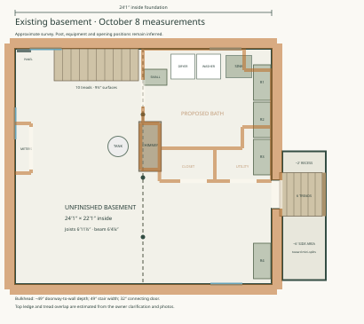